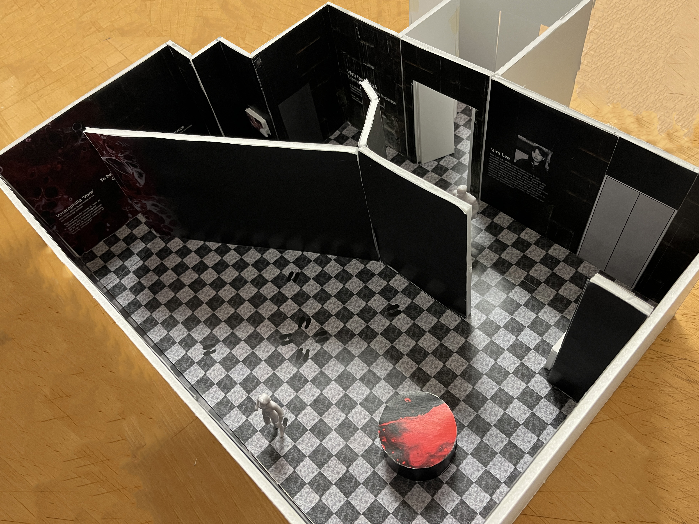
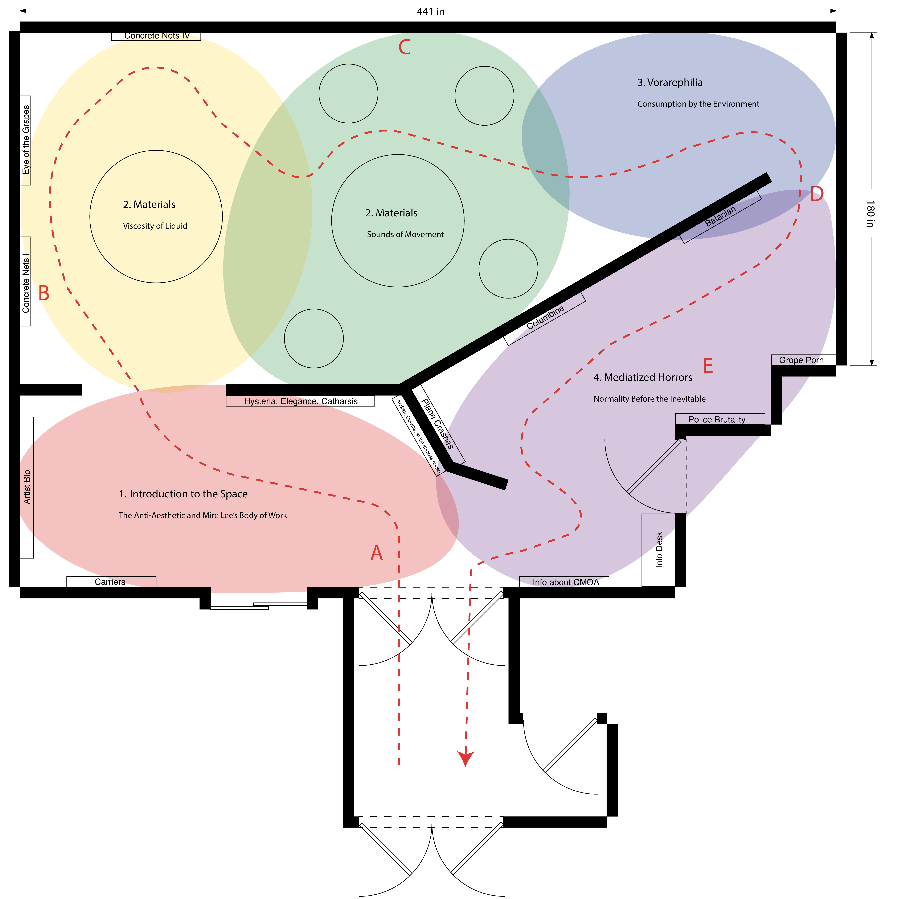

Final Exhibit
Click here to access the exhibition virtually in SketchUp
 Interaction 1
Introduction to the Space
Given the limitation of the scale of her work, I couldn’t physically
bring in her work to view in my exhibit. Instead, I opted to create
an interaction in which visitors could see and hear her older
larger-scale installations. A pressure sensor is used to detect the
presence of individuals, prompting the screen to start/stop
playing the video.
Interaction 2
Materials: Sound and Movement
Vore has to do with a desire for unification with another being,
which inspired this space where it turns from an individual to
group experience. Also acts as a transition to the next area where
“vore” is physically experienced, in which visitors feel as if they
are being consumed by the environment. Videos taken
from “Carriers” (2020).
Interaction 3
Vorarephilia
Changes in wall, lighting, sound, and temperature combine to make
you feel like you are being consumed. Encourages learning of the
concept of vore to those that are unfamiliar. Acts on fears such as
darkness (“walking into the void” and claustrophobia to elevate
feelings as you interact with the space.